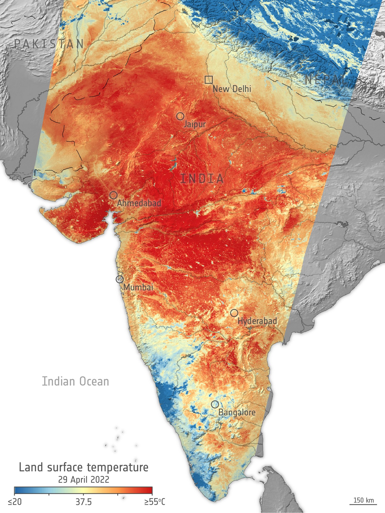
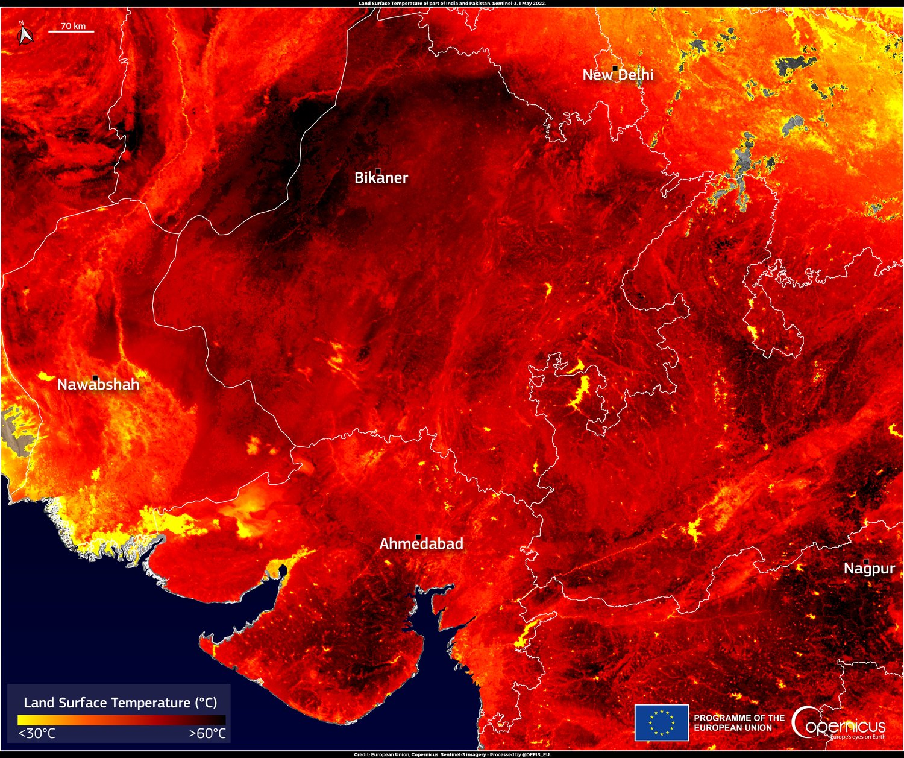
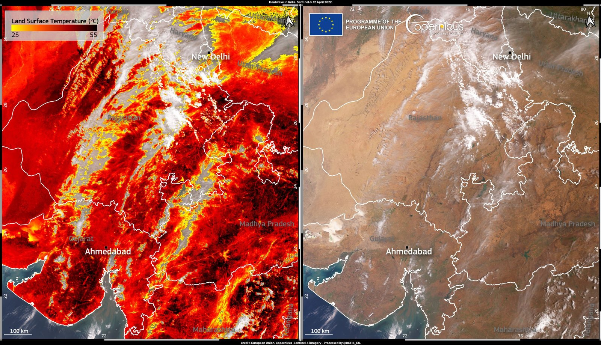
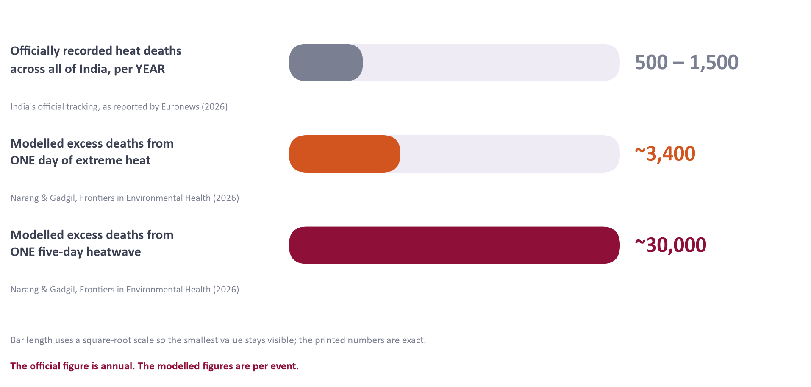
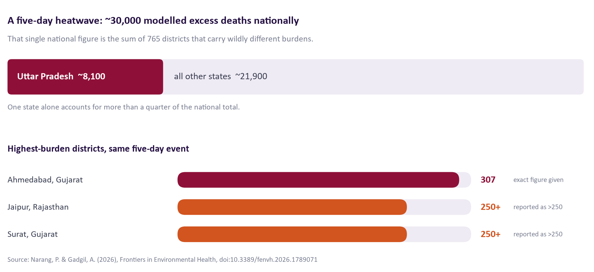
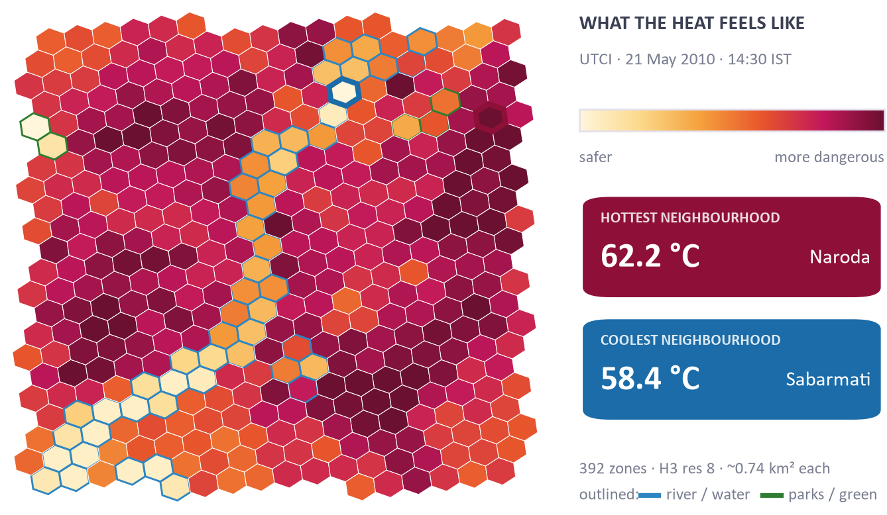

How India measures a heatwave — and what that measurement cannot see.

Every summer, India is warned about heat the same way: a single air temperature, for an entire district, one or two days ahead. That number is simple, fast and national — and it cannot distinguish a survivable hot day from a lethal one, cannot see the nights, and cannot tell one neighbourhood from the next.
This case study sets out the problem as it stands in 2026, using peer-reviewed work and contemporary reporting only.
Every figure is attributed. Where a number is modelled rather than counted, it says so. Where a source is an opinion piece, it is labelled as one.
Land surface temperature across India,
29 April 2022. Reds exceed 55 °C at the ground. The heat is not
evenly spread: it pools and breaks across hundreds of kilometres — and it
does so differently again inside every city marked on this map.
Image: European Space Agency. Licence: Attribution (CC BY-SA 3.0 IGO).
This is not a historical problem being revisited. Summer 2026 was the third consecutive record-breaking Indian summer, following 2024 and 2025.

Sources: V. Krishnan, Al Jazeera (opinion), 22 May 2026, for the Akola reading, the top-50 claim and the Action Plan timing; Phys.org/AFP, 24 May 2026, for the death toll and the Delhi and IMD figures. Full citations on page 7.
The India Meteorological Department declares a heatwave when air temperature reaches 40 °C in the plains or 30 °C in hilly regions, sustained for at least two consecutive days at 4.5 °C above normal. That is a dry-bulb criterion: it measures the air, not what the air does to a person.

A body does not shed heat by reading a thermometer. It sheds heat mainly by evaporating sweat, and humidity closes that route. Forty degrees in dry air and forty degrees in humid air are the same reading and materially different days — and only the second is capable of killing a healthy adult who cannot get indoors.
“Heatwave events are defined using dry-bulb temperature … rather than wet-bulb temperature or heat index … some high-heat-stress days will not breach the dry-bulb 97th percentile, and therefore genuine heatwave events may be missed.”
Narang & Gadgil, Frontiers in Environmental Health, 26 May 2026 — stating the limitation of their own national study, and recommending wet-bulb metrics “in humid coastal districts where dry-bulb temperature understates physiological heat stress.”
Because the trigger is coarse and the diagnosis is hard, heat deaths in India are recorded at a small fraction of the modelled burden.

“Official statistics substantially underreport heat-related deaths.”
Narang & Gadgil (2026). Public health specialist Dr Dileep Mavlankar has separately estimated the undercount at a factor of at least ten.
In May 2026 the first district-level analysis covering all 765 Indian districts was published. It transfers city-specific heatwave–mortality risk to climatically similar districts, using Köppen-Geiger climate zones and a 97th-percentile temperature threshold, against baseline mortality from the Civil Registration System.

The distribution is the point. A national total of roughly 30,000 tells a minister the scale of the problem but not where to send anything. Uttar Pradesh alone carries more than a quarter of it. Three districts — Ahmedabad, Jaipur and Surat — each exceed 250 excess deaths in a single five-day event.
“Granular spatial-temporal data on how heatwaves affect mortality at the district level in India remain inaccessible.”
Narang & Gadgil (2026), on why the study was needed. District resolution is the current research frontier — not the current warning practice.
Ahmedabad district is the single highest-burden district in the national study. But a district is not where people live — a neighbourhood is. The map below resolves one city into 392 zones of about 0.74 km² each and computes, for one moment, what the heat does to a human body in each.

The hottest and coolest neighbourhoods are a few kilometres apart. A single district-level number averages that difference away — and it is precisely that difference that decides whether an outdoor shift is workable or fatal.
Stated limitation: the spatial pattern above is derived from measured urban form (OpenStreetMap roads, green cover and water). The magnitude of the urban heat offset is a published literature value of 3.0 °C, not a local measurement. The finding survives across the full published range of 2–5 °C.
doi:10.3389/fenvh.2026.1789071 — source of the 3,400/day and
30,000/five-day modelled figures, the 765-district method, the Uttar Pradesh and
district burdens, the 733-vs-360 comparison, and both quoted limitations.On what is not here. No current-year national death toll is presented as fact, because none could be verified to a primary source; the modelled figures are labelled as modelled throughout. No photograph of an identifiable individual is used. Every image carries its licence.